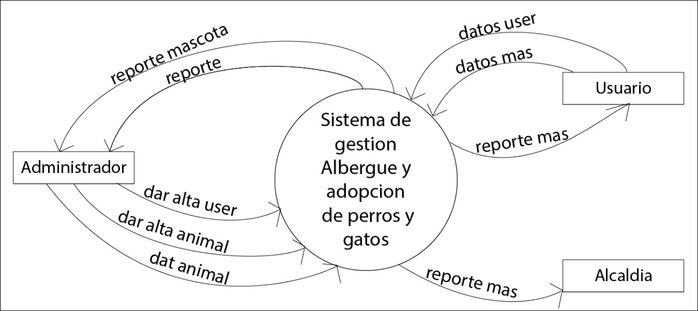

Albergue de Mascotas
Declaracion de propositos
Desarrollar un sistema para gestionar un albregue para perros y gatos,además para tener el registro de animales
y sus caracteristicas .
Si una persona del albergue desea localizar un animal ingresa sus datos de animal .
En caso que una persona desea adoptar este tendra que ser registrado en el sistema.
El sistema podra designar el area para cada animal segun sus caracteristicas.
Lista de acontecimientos
-Registrar animales.
-Registrar personas.
-Informe de animales adoptados.
-informe de capacidad por áreas.
Diagrama de Contexto
